Web Application Structure
This hands-on lab takes you build a simplest possible Web application
using NetBeans. You are going to add a servlet and JSP page to
the application. You will also learn the structure of a Web
application.
Expected duration: 80 minutes (excluding
homework)
Software Needed
Before you begin, you need to install the following software on your
computer. The downloading and installation instruction of JDK and
NetBeans can be found in Exercise 0 below.
- Java Standard Development Kit (JDK™) version
6.0 (download)
- If you already have installed JDK 5.0 or JDK 6.0, you
can skip this.
- NetBeans 6.7 or later version (download) The
latest version as of Jan. 31st 2010 is NetBeans 6.8.
- When you install NetBeans IDE, it will ask you which JDK
you want to use.
- You have to choose NetBeans version that has Java Web and EE technology (or
install the Java Web and EE plug-in's if you already have installed a
NetBeans)
OS platforms you can use
- Windows
- Solaris x86, Solaris Sparc
- Linux
- Mac OS X
Change Log
- Oct. 11th, 2006: Homework is added
- Oct. 30th, 2006: NetBeans IDE 5.5 link is updated
- May 28th, 2008: NetBeans 6.1 and GlassFish v2 are used.
- June 28th, 2008: Downloading and installation instruction of JDK
and NetBeans are added as Exercise 0
- Aug. 6th, 2009: Updated with NetBeans 6.7.1
- March 10th, 2010: Clarified web.xml issue with NetBeans 6.8 (Sang
Shin)
- Nov. 30th, 2010: Name of the zip file has been changed (Sang Shin)
Lab Exercises
Exercise 0: Downloading and installation
of JDK and NetBeans
You can install JDK and NetBeans using various types of bundles - they
all should work. Here, you are going to install JDK first and
then NetBeans IDE.
(0.1) Install JDK 6
If you already have installed JDK 5 or 6 on your machine, you can skip
this step. (Or if you choose to do so, you can install JDK along
with NetBeans by choosing "JDK 6 Update 13 with NetBeans <version
number>".)
1. Download JDK Update x (as of Jan. 31st, 2010, the Update 18 is the
latest) from the
download
page.
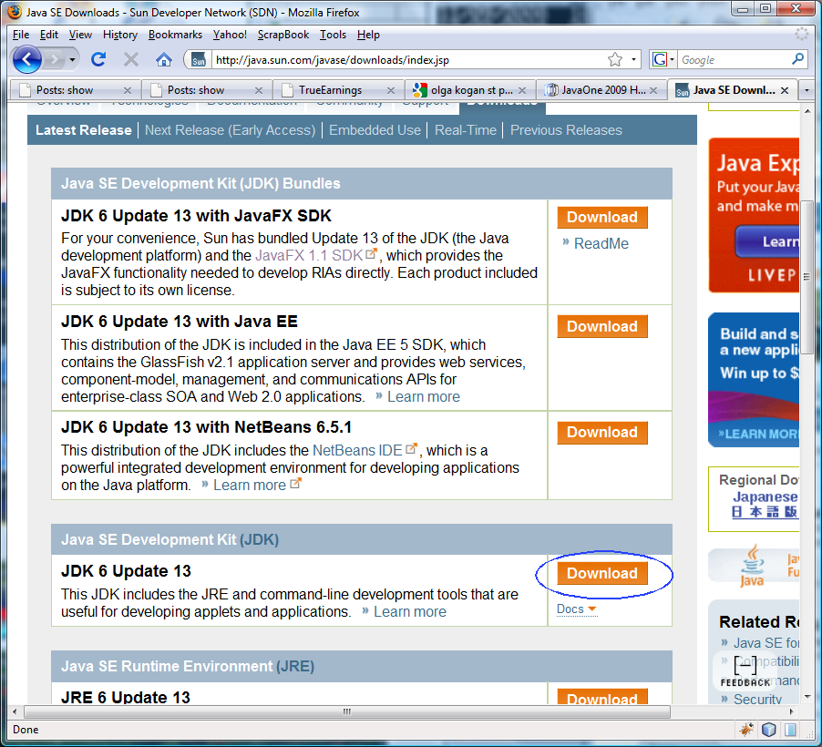
2. Select the Platform and check the "I agree to the Java SE
Development Kit 6 Licence Agreement".
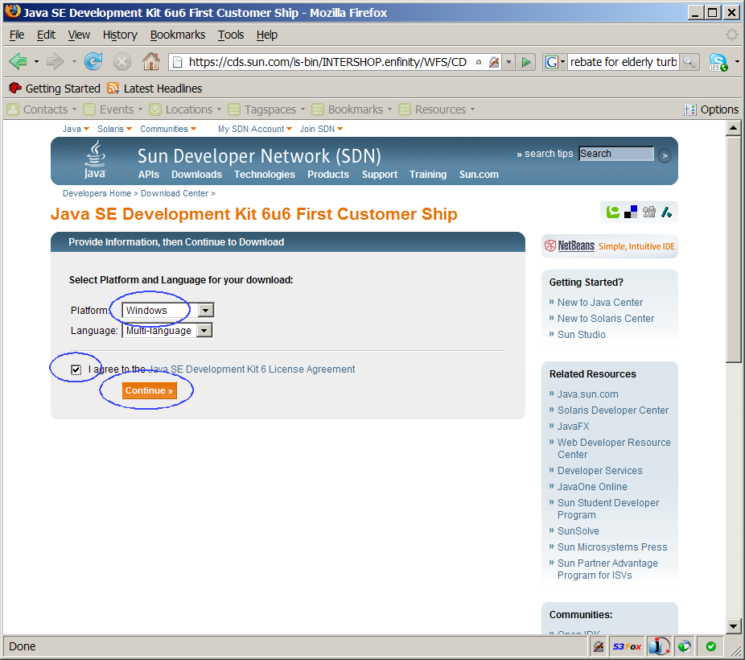
3. Download the JDK 6 package either directly or using Sun Download
Manager. (Use Sun Download Manager if your network is not
reliable.)
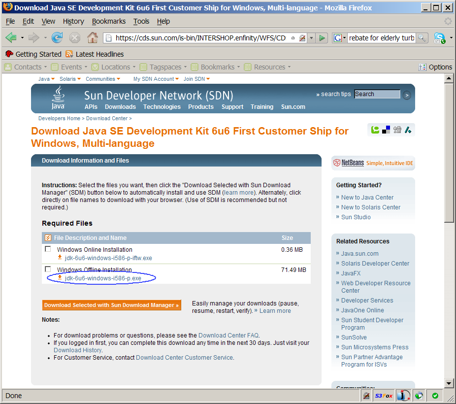
4. Save the file in the local file system.
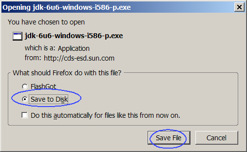
5. Install JDK.
(0.2) Download and
Install NetBeans
1. Download NetBeans IDE from the
download
page. Choose Platform and select NetBeans IDE bundle as shown
below. You can choose either
Java
bundle or
All bundle -
Any bundle that has
Java Web and EE and
GlassFish V2.1 technologies
will do it.
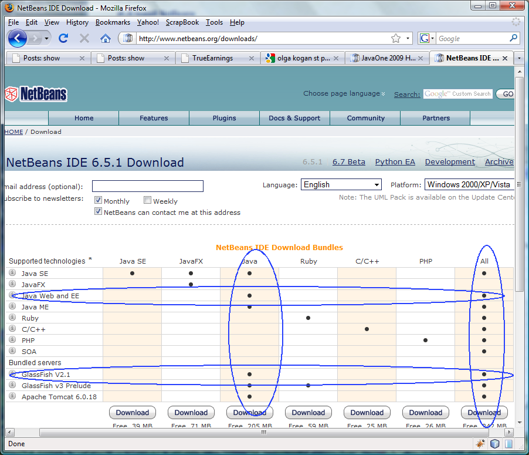
Exercise 1: Create a new Web Application
In this exercise, you are going to create
a simplest possible Web application that contains a single index.jsp
initially. You will then add a new Servlet and a new JSP file to
the application.
(1.1)
Create a new NetBeans project
0. Start NetBeans IDE if you have not
done so yet.
1. Select File->New Project (Ctrl+Shift+N).
(Figure-1.10 below) The New Project
dialog box appears.
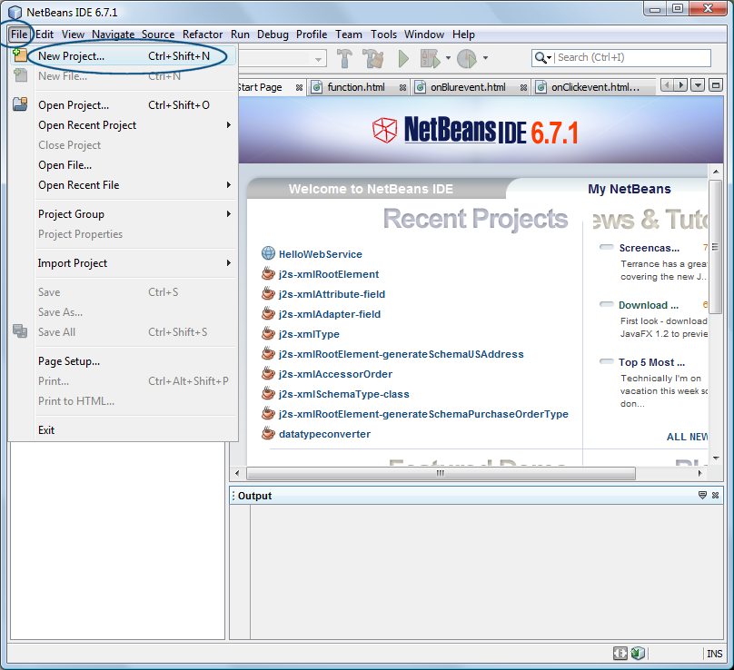
Figure-1.10: Create a new NetBeans project
2. Under Choose
Project pane,
select Java Web under Categories and Web Application
under Projects. Click Next. (Figure-1.11 below)
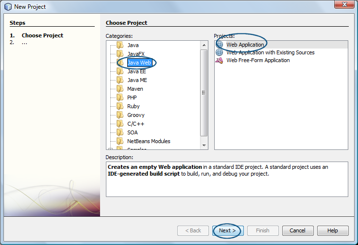
Figure-1.11: Create a new Web application project
3. Under
Name and Location
pane, for the
Project Name
field, type in
MyFirstWebApp as
project name. Click
Next.
(Figure-1.12 below)
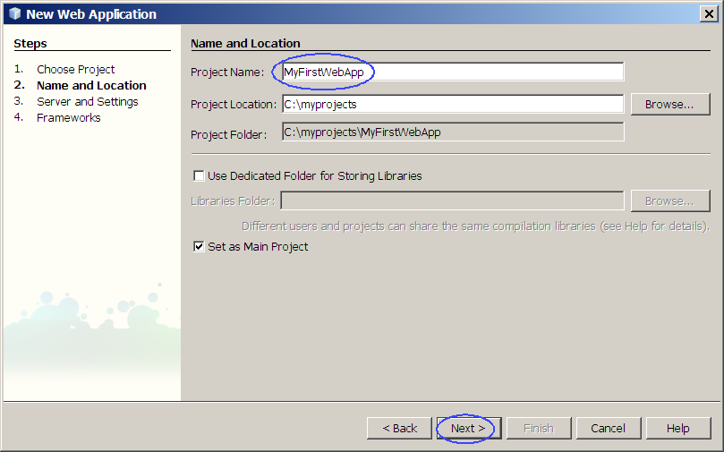
Figure-1.12: Create MyFirstWebApp project
4. Finish creating a NetBeans project.
- Observe that the Server is set to GlassFish V2 (for NetBeans 6.5.x) or
GlassFish V3 (for NetBeans
6.7.x and 6.8). You can use either.
- For the Java EE Version
field, for the sake of this exercise, choose Java EE 5. This is to create web.xml. (In GlassFish v3, which
creates Java EE 6 application does not create web.xml file as a
default.)
- Click Finish.
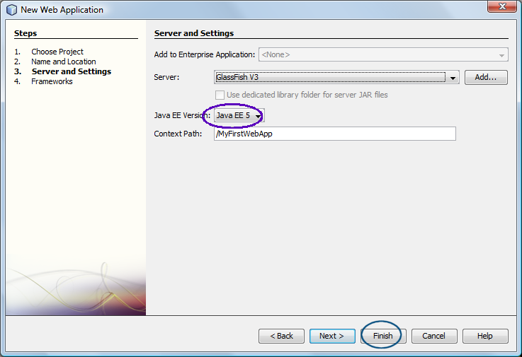
5. Observe that MyFirstWebApp project node appears
with the IDE generated index.jsp
file displayed in the source editor. (Figure-1.13 below)
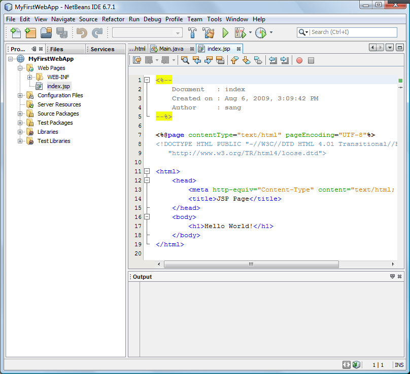
Figure-1.13: MyFirstWebApp project is created
return to top of exercise
(1.2)
Build and run the project
At this point, you have a useless but
fully complete Web application which contains a single JSP file, index.jsp. You are going to
build and run the application.
1. Right click MyFirstWebApp project node and
select Run.
(Figure-1.20 below)
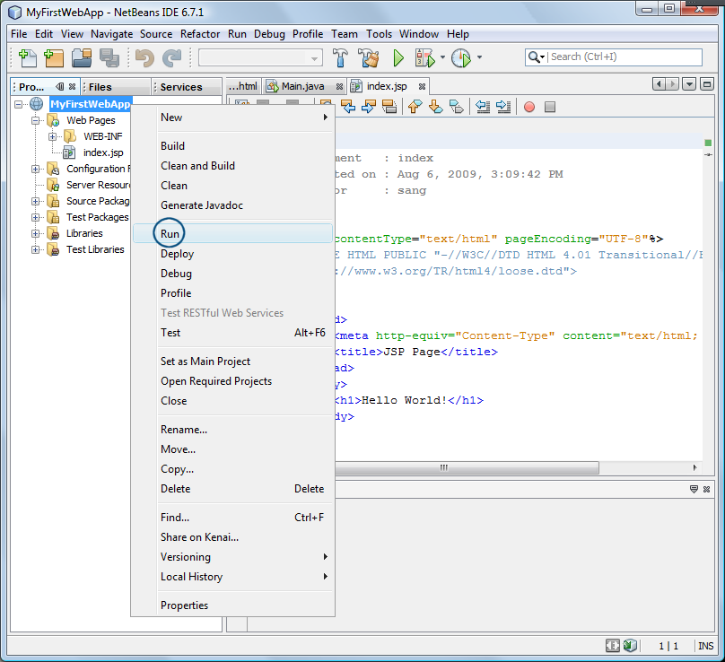
Figure-1.20: Run
2. The IDE then compiles any Java source
files, and
then deploys over the deployment platform - GlassFish V2 in this
example. It also displays the browser.
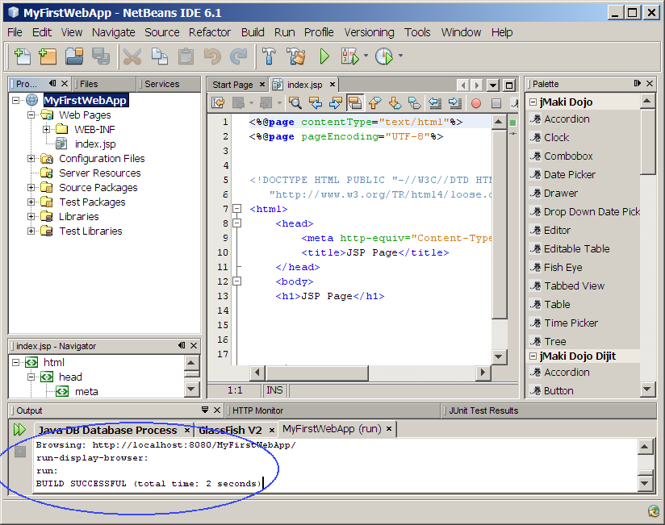
Figure-1.21: Result of running the project
3. Observe that a browser is displayed accessing the application.
(Figure-1.22 below)
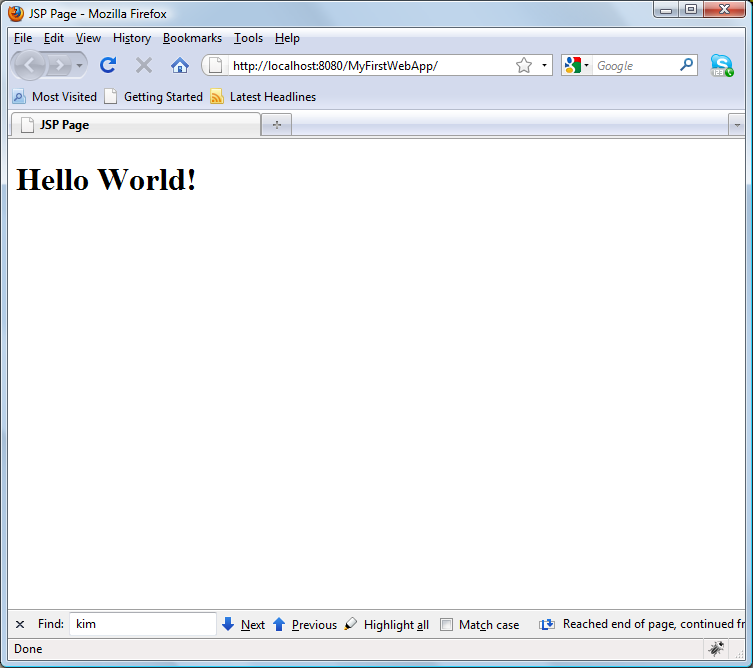
Figure-1.22: Accessing the application from a browser
return to top of exercise
(1.3)
Modify the index.jsp of the application
In this step, you are going to modify
the index.jsp of the application.
1. Double click
index.jsp
file
under
MyFirstWebApp->Web Pages
as shown in Code-1.30 below. The code fragments that need to be
modified are highlighted in bold and red-colored font.
<%--
Document : index
Created on : Aug 6, 2009, 3:09:42 PM
Author : sang
--%>
<%@page contentType="text/html" pageEncoding="UTF-8"%>
<!DOCTYPE HTML PUBLIC "-//W3C//DTD HTML 4.01 Transitional//EN"
"http://www.w3.org/TR/html4/loose.dtd">
<html>
<head>
<meta
http-equiv="Content-Type" content="text/html; charset=UTF-8">
<title>This is my first Web
application</title>
</head>
<body>
<h1>Peace to the world!</h1>
</body>
</html>
|
Code-1.30: Modified index.jsp
2. Right click
MyFirstWebApp
project node and select
Run.
(Figure-1.31 below)
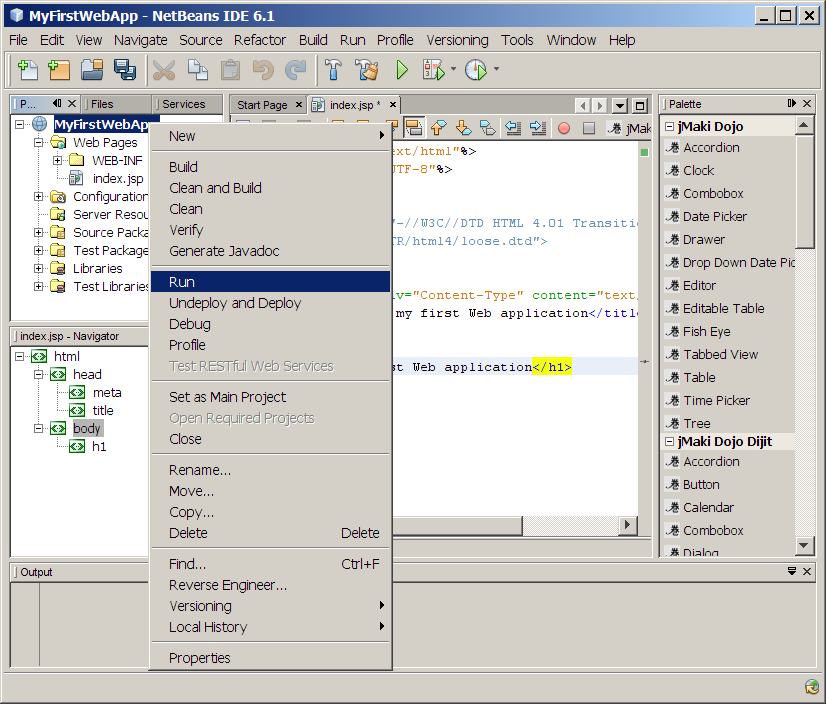
Figure-1.31: Run the project
3. Observe that a browser is displayed with your change. (Figure-1.32
below)
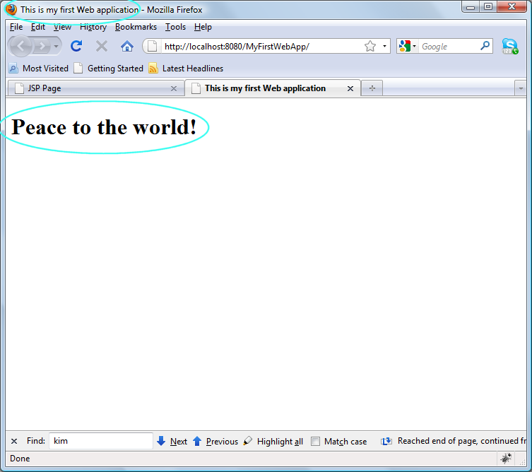
Figure-1.32: Result of the running the application
return to top of exercise
(1.4)
Add a Servlet to the application
1. Add a new servlet.
- Right click MyFirstWebApp project
node and
select New->Servlet.
(Figure-1.40 below)
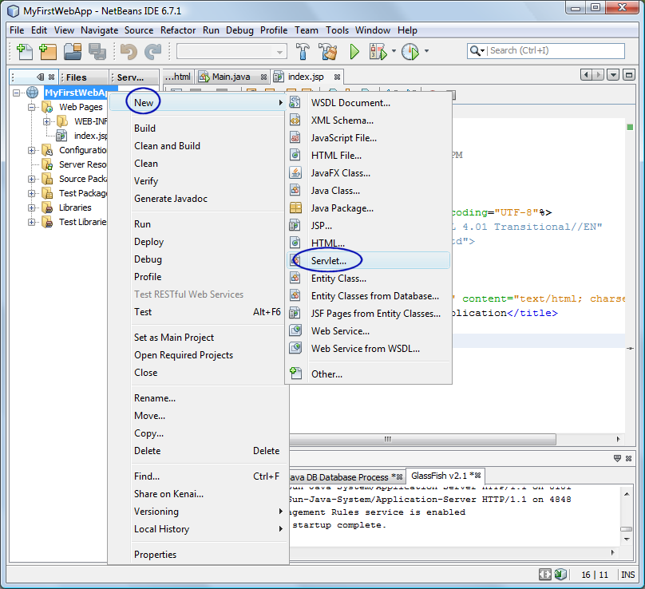
Figure-1.40: Create a new servlet
- Observe that the New Servlet
dialog box appears.
- For Class Name field,
type
in MyOwnServlet.
- For Package field, type
in myownpackage.
Click Next. (Figire-1.41 below)
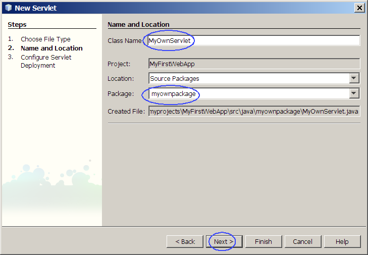
Figure-1.41: Create a new servlet
- Click Finish of the Configure Servlet Deployment pane.
(Figure-1.42 below)
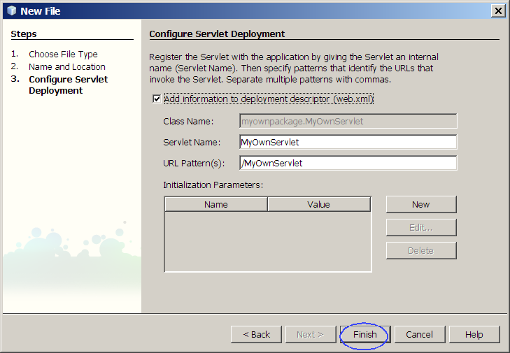
Figure-1.42: Configure Servlet Deployment pane
- Observe now that you have one JSP file, index.jsp,
and one servlet, MyOwnServlet.java in
this
application. (Figure-1.43 below)
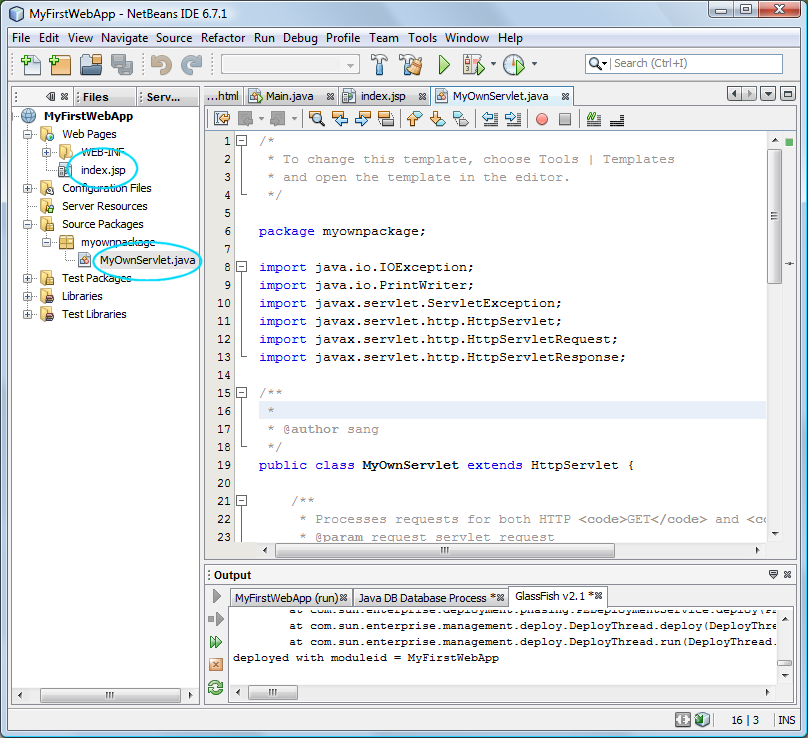
Figure-1.43: index.jsp and MyOwnServlet.java
2. Modify the IDE generated
MyOwnServlet.java.
/*
* To change this template, choose Tools | Templates
* and open the template in the editor.
*/
package myownpackage;
import java.io.IOException;
import java.io.PrintWriter;
import javax.servlet.ServletException;
import javax.servlet.http.HttpServlet;
import javax.servlet.http.HttpServletRequest;
import javax.servlet.http.HttpServletResponse;
/**
*
* @author sang
*/
public class MyOwnServlet extends HttpServlet {
/**
* Processes requests for both HTTP
<code>GET</code> and <code>POST</code> methods.
* @param request servlet request
* @param response servlet response
* @throws ServletException if a
servlet-specific error occurs
* @throws IOException if an I/O error occurs
*/
protected void processRequest(HttpServletRequest
request, HttpServletResponse response)
throws ServletException, IOException {
response.setContentType("text/html;charset=UTF-8");
PrintWriter out =
response.getWriter();
try {
// TODO output your page here
out.println("<html>");
out.println("<head>");
out.println("<title>Servlet MyOwnServlet</title>");
out.println("</head>");
out.println("<body>");
out.println("<h1>Servlet MyOwnServlet at " +
request.getContextPath () + "</h1>");
out.println("</body>");
out.println("</html>");
//
} finally {
out.close();
}
}
// <editor-fold defaultstate="collapsed"
desc="HttpServlet methods. Click on the + sign on the left to edit the
code.">
/**
* Handles the HTTP
<code>GET</code> method.
* @param request servlet request
* @param response servlet response
* @throws ServletException if a
servlet-specific error occurs
* @throws IOException if an I/O error occurs
*/
@Override
protected void doGet(HttpServletRequest request,
HttpServletResponse response)
throws ServletException, IOException {
processRequest(request,
response);
}
/**
* Handles the HTTP
<code>POST</code> method.
* @param request servlet request
* @param response servlet response
* @throws ServletException if a
servlet-specific error occurs
* @throws IOException if an I/O error occurs
*/
@Override
protected void doPost(HttpServletRequest request,
HttpServletResponse response)
throws ServletException, IOException {
processRequest(request,
response);
}
/**
* Returns a short description of the servlet.
* @return a String containing servlet
description
*/
@Override
public String getServletInfo() {
return "Short description";
}// </editor-fold>
}
|
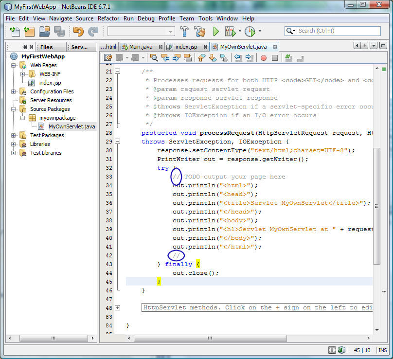
3. Build and run the application.
- Right click MyFirstWebAppproject
node and select Run.
- Observe that the browser is refreshed with the same URL.
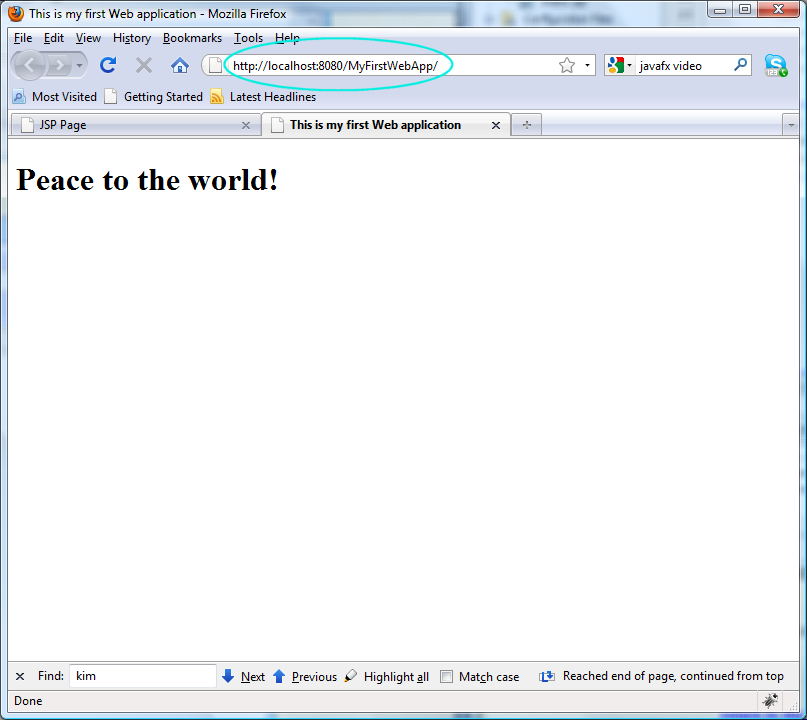
- Change the URL to http://localhost:8080/MyFirstWebApp/MyOwnServlet.
- Observe that the output from the servlet is now displayed.
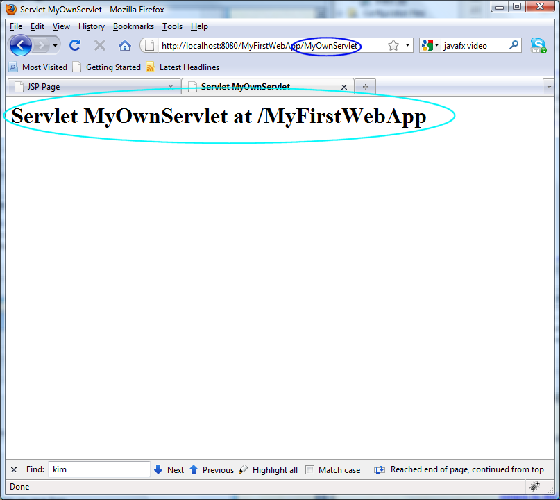
4. Change the
Relative URL of
the application. The Relative URL is used by the NetBeans IDE as
the starting URL when the application is run. (This is an attribute set
to the NetBeans project not as part of the Web application.)
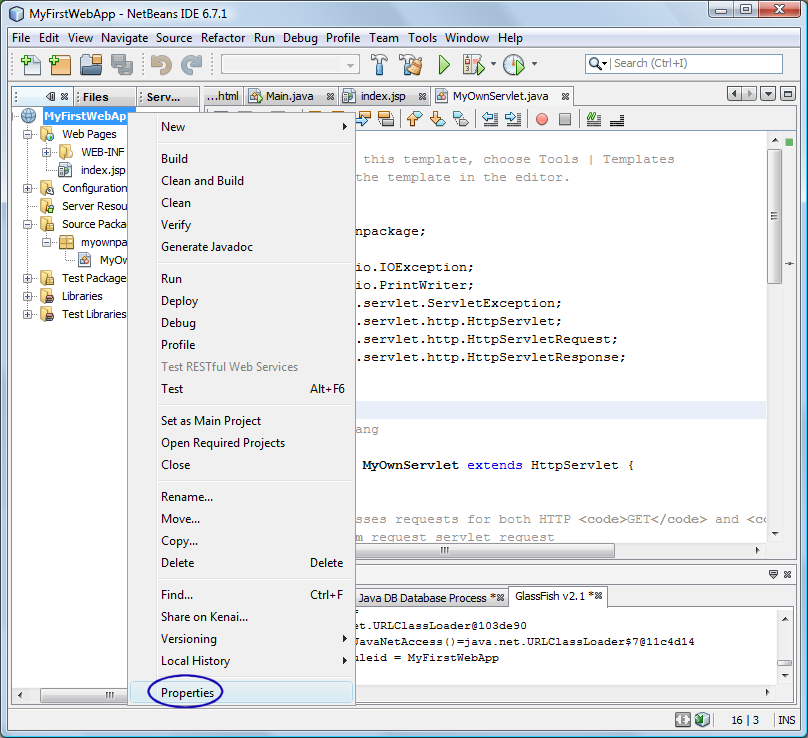
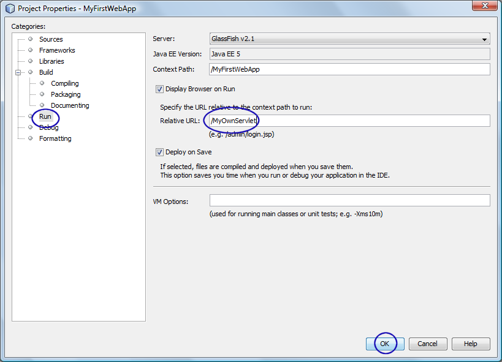
5. Build and run the application.
- Right click MyFirstWebAppproject
node and select Run.
- Observe that the browser is refreshed.
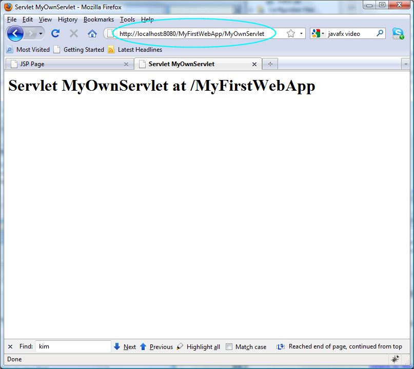
return to top of exercise
(1.5)
Add a new JSP called MyOwnJSP.jsp to the application
1. Add new JSP.
- Right click MyFirstWebApp project
node and
select New->JSP. (Figure
1.50 below)
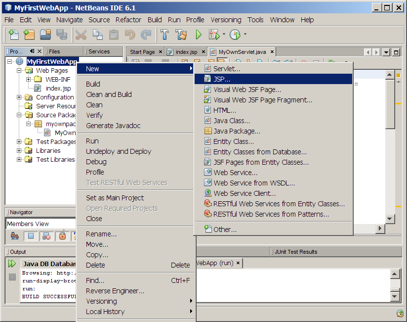
Figure 1.50: Create a new JSP file
- For the JSP File Name
field, type in MyOwnJSP.
(Figure 1.51 below)
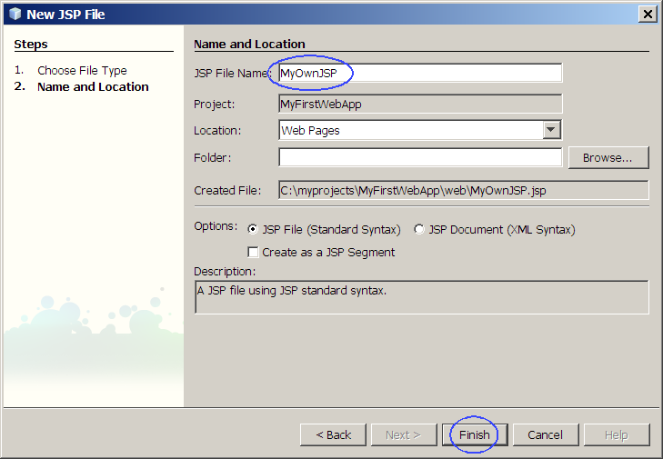
Figure 1.51: Name and Location pane
- Observe that MyOwnJSP.jsp
is
added to
the project.
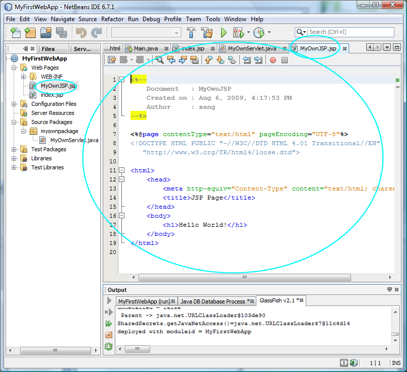
2. Modify the IDE generated MyOnwJSP.jsp.
<%--
Document : MyOwnJSP
Created on : Aug 6, 2009, 4:17:53 PM
Author : sang
--%>
<%@page contentType="text/html" pageEncoding="UTF-8"%>
<!DOCTYPE HTML PUBLIC "-//W3C//DTD HTML 4.01 Transitional//EN"
"http://www.w3.org/TR/html4/loose.dtd">
<html>
<head>
<meta
http-equiv="Content-Type" content="text/html; charset=UTF-8">
<title>My Own JSP</title>
</head>
<body>
<h1>Hello Boston!</h1>
</body>
</html>
|
3. Build and run the application.
- Right click MyFirstWebApp
project node and select Run.
- Chage the URL to http://localhost:8080/MyFirstWebApp/MyOwnJSP.jsp.
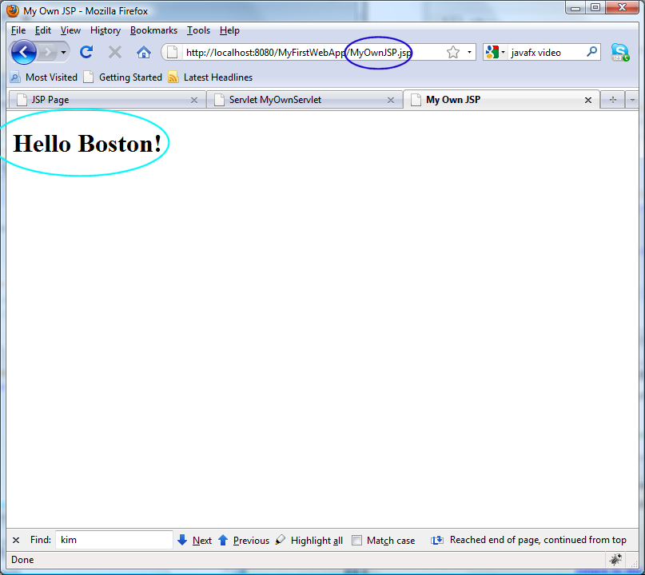
return to top of exercise
Summary
In this exercise, you have built
and run a simplest possible Web application that contains a single
index.jsp page first and then add a new JSP page and a new servlet.
return to the top
Exercise 2: Study the
MyFirstWebApp application
In this exercise, you are going to
examine the things under the hood such as web.xml.
(2.1)
Examine the Web application project structure in Files view
A Web application is made of JSP files,
Servlets, and library files. The MyFirstWebApp
application has
two JSP files, index.jsp and MyOwnJSP.jsp, a single servlet,
MyOwnServlet.java, and default
library files. You can add new JSP
files, new Servlets, and new library files to the application as you
did in Exercise 1.
Under NetBeans, you work with your
project mostly under
Projects view but you can also
see it from Files view.
In this
step, you are going to see the Files view
of the MyFirstWebApp
application. A Files view of a project displays
directories and
files of the project in your local file system.
1. Select Files tab
window. You should see the Files
view of the MyFirstWebApp project.
2. Expand src and expand java. You should see all the
Java files.
3. Expand web. You
should see all JSP files (and HTML files if you have them).
(Figure 2.10 below)
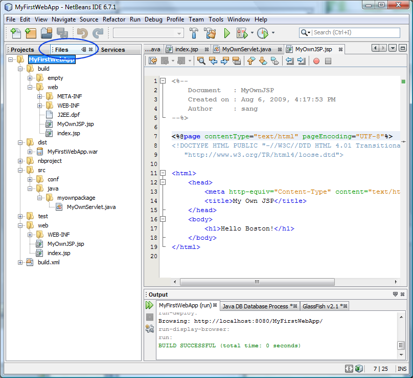
Figure-2.10: Files view
return to top of exercise
(2.2)
Examine the WAR file structure
A WAR is a zip file that contains all the pieces that are necessary for
deploying the application over a deployment platform such as Tomcat or
GlassFish. In this step, you are going to see
internal structure of the WAR file. The internal structure of the
WAR file is constructed from the contents of the
web directory under
build directory. From
NetBeans 6.1, if you "Run" the project, the WAR file
is not created as a default. You will have to "Build" project in
order to see the WAR file under
dist directory.
0. Right click the
MyFirstWebApp project
node and select
Build.
This is to create WAR file for the sake of this exercise.
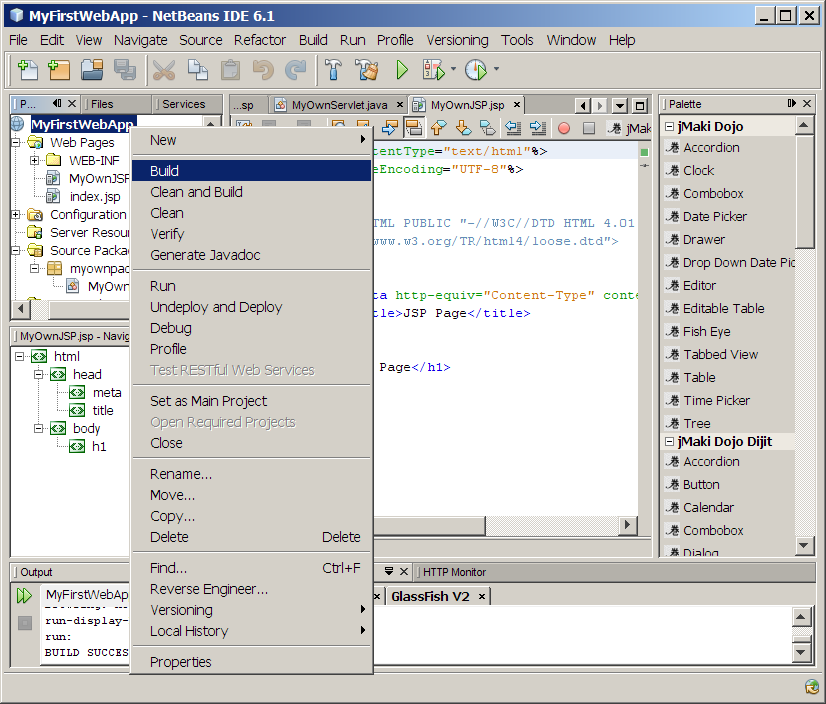
1. Under
Files view of the
project, expand
dist. You
should see
MyFirstWebApp.war
file.
2. Expand
MyFirstWebApp.war.
You should see
WEB-INF
directory,
MyOwnJSP.jsp and
index.jsp in the root directory.
3. Expand
WEB-INF->classes.
You
should see
myownpackage directory
which then contains
MyOwnServlet.class.
(Figure 2.20 below)
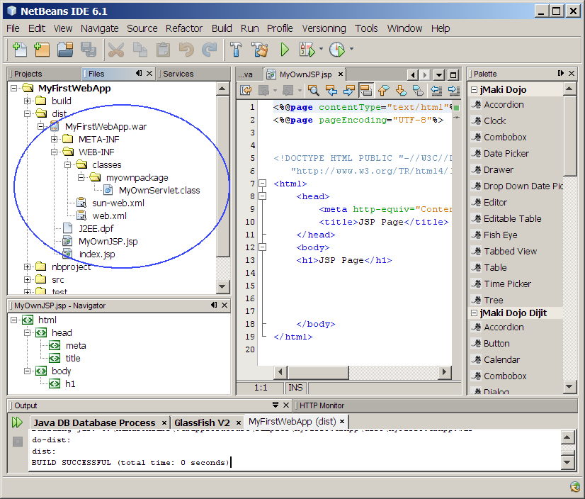
Figure-2.20: MyFirstWebApp.war
return to top of exercise
(2.3)
Examine the web.xml
1. Click
Projects tab window.
2. Double click
web.xml under
WEB-INF directory. Click
XML to see the file in the XML file
format.
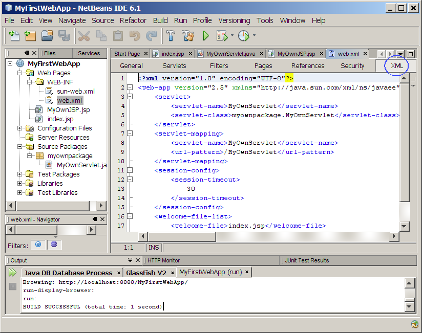
Figure-2.30: web.xml
return to top of exercise
(2.4)
Modify web.xml to use MyOwnJSP.jsp as a default JSP file to get
displayed
1. Modify
MyOwnJSP.jsp file as
shown below. The code fragments that need to be modified are
highlighted in
bold
and red-colored font.
<%--
Document : MyOwnJSP
Created on : Aug 6, 2009, 4:17:53 PM
Author : sang
--%>
<%@page contentType="text/html" pageEncoding="UTF-8"%>
<!DOCTYPE HTML PUBLIC "-//W3C//DTD HTML 4.01 Transitional//EN"
"http://www.w3.org/TR/html4/loose.dtd">
<html>
<head>
<meta
http-equiv="Content-Type" content="text/html; charset=UTF-8">
<title>My Own JSP Changed 2nd time</title>
</head>
<body>
<h1>Hello Korea!</h1>
</body>
</html>
|
Code-2.40: Modified MyOwnJSP.jsp
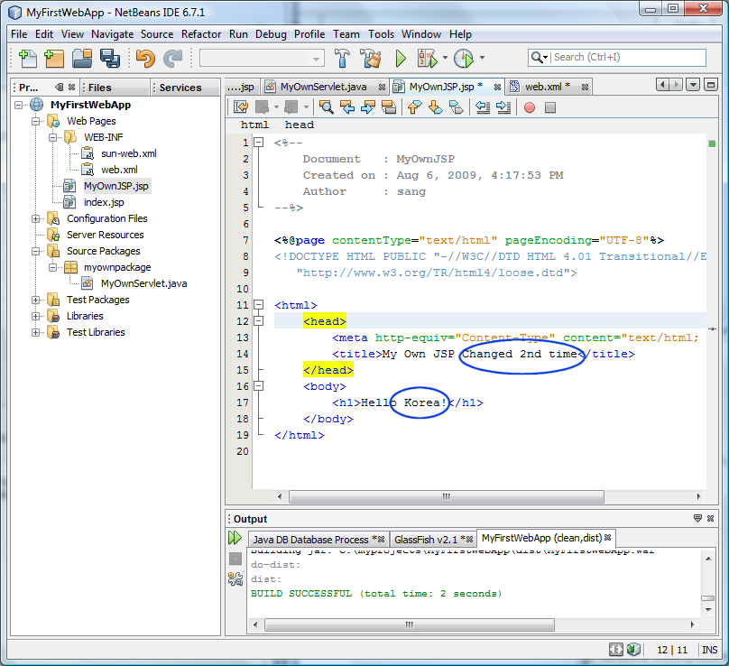
2. Modify the
web.xml as
shown below. The code fragments that need to be modified are
highlighted in
bold
and red-colored font.
<?xml version="1.0"
encoding="UTF-8"?>
<web-app version="2.5" xmlns="http://java.sun.com/xml/ns/javaee"
xmlns:xsi="http://www.w3.org/2001/XMLSchema-instance"
xsi:schemaLocation="http://java.sun.com/xml/ns/javaee
http://java.sun.com/xml/ns/javaee/web-app_2_5.xsd">
<servlet>
<servlet-name>MyOwnServlet</servlet-name>
<servlet-class>myownpackage.MyOwnServlet</servlet-class>
</servlet>
<servlet-mapping>
<servlet-name>MyOwnServlet</servlet-name>
<url-pattern>/MyOwnServlet</url-pattern>
</servlet-mapping>
<session-config>
<session-timeout>
30
</session-timeout>
</session-config>
<welcome-file-list>
<welcome-file>MyOwnJSP.jsp</welcome-file>
</welcome-file-list>
</web-app>
|
Figure-2.41: Modified web.xml
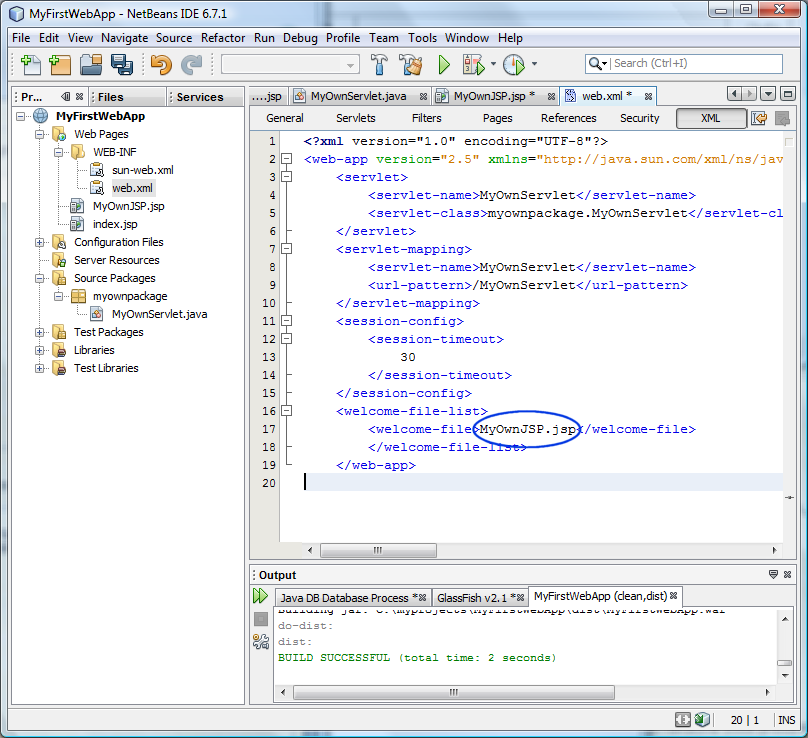
3. Right click
MyFirstWebApp
project node and select
Run.
You should see MyOwnJSP.jsp file gets displayed.
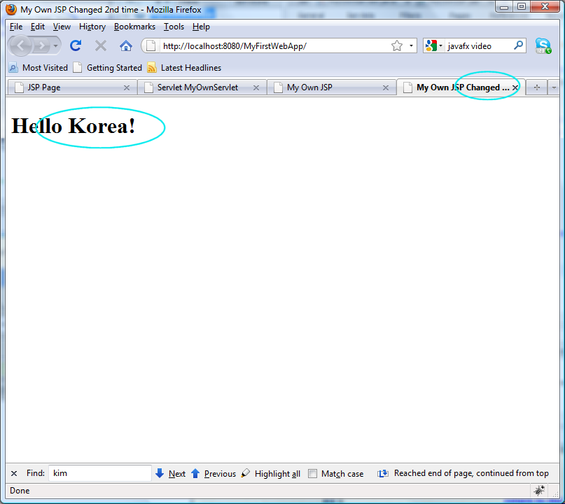
Figure-2.42: MyOwnJSP.jsp is displayed
return to top of exercise
(2.5)
Access MyOwnServlet
6. Modify the
web.xml as
shown below. The code fragments that need to be modified are
highlighted in
bold
and red-colored font.
<?xml version="1.0"
encoding="UTF-8"?>
<web-app version="2.5" xmlns="http://java.sun.com/xml/ns/javaee"
xmlns:xsi="http://www.w3.org/2001/XMLSchema-instance"
xsi:schemaLocation="http://java.sun.com/xml/ns/javaee
http://java.sun.com/xml/ns/javaee/web-app_2_5.xsd">
<servlet>
<servlet-name>MyOwnServlet</servlet-name>
<servlet-class>myownpackage.MyOwnServlet</servlet-class>
</servlet>
<servlet-mapping>
<servlet-name>MyOwnServlet</servlet-name>
<url-pattern>/MyOwnServletUseDifferentURL</url-pattern>
</servlet-mapping>
<session-config>
<session-timeout>
30
</session-timeout>
</session-config>
<welcome-file-list>
<welcome-file>MyOwnJSP.jsp</welcome-file>
</welcome-file-list>
</web-app>
|
Figure-2.54: Modified web.xml
7. Right click
MyFirstWebApp
project node and select
Run.
You should experience an error.
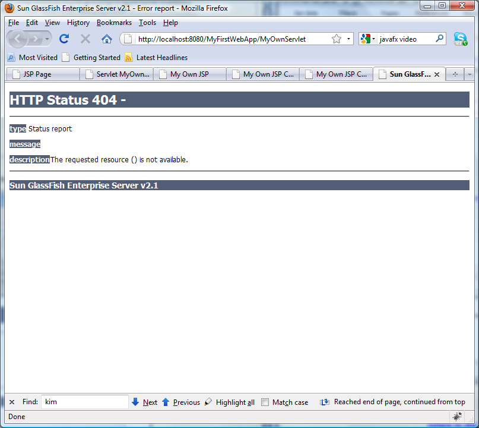
Figure 2.55: Error condition expected
8. From your browser, go to directly to
http://localhost:8080/MyFirstWebApp/MyOwnServletUseDifferentURL.
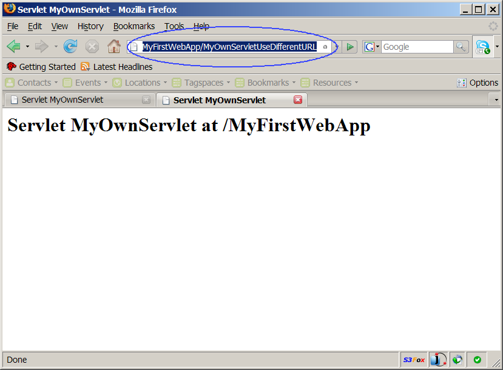
return to top of exercise
(2.6)
Example deployment platform
1. Click Services tab
window.
2. Expand Servers->GlassFish
V2
and expand Web Applications.
You should see /MyFirstWebApp
is deployed.
Summary
In this exercise, you have looked into
the project from the files view. You looked into web.xml file of
the application.
Return to the top
Homework Exercise
1.
The homework is to modify the MyFirstWebApp project as described below. (You
might want to create a new project by copying
the MyFirstWebApp project.) You can name the
homework project in any way you want
but here I am going to call it MyFirstWebAppMyOwn.
- Add another JSP file called MyOwnJSP2.jsp.
Modify the file as you did in step 2.4.
- Add another Servlet called MyOwnServlet2.java.
Modify the file as you did in step 1.4.
- Change the Relative URL field of the properties of the project as
you did in step 2.5.
- Run the application as you did in step 2.5.
2
. Send the following files to
j2eehomeworks@javapassion.com
with Subject
as webapp_architecture.
- Zip file of the
MyFirstWebAppMyOwn
NetBeans project. (Someone else
should be able to open and run it as a NetBeans project.) You can
use your favorite zip utility or you can use "jar" utility that comes
with JDK as following.
- cd <parent directory that contains MyFirstWebAppMyOwn directory>
(assuming you named your project as MyFirstWebAppMyOwn)
- jar cvf MyFirstWebAppMyOwn.zip MyFirstWebAppMyOwn (MyFirstWebAppMyOwn should contain nbproject directory)
- Captured output screen -
name it as webapp_architecture.gif
or webapp_architecture.jpg (or webapp_architecture.<whatever
graphics format>)
- Any screen capture that shows that your program is working is
good enough.
- If you decide to use
different IDE other than NetBeans, the zip
file should contain all the files that are needed for rebuilding the
project - war file with necessary source files is OK.
return to the top